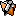

Le Centre de Contrôle
Aprés avoir démarré GenJ, une fenêtre s'ouvre
pour présenter une liste des fichiers Gedcom. Vous pouvez à
partir de là, ouvrir des vues d'un fichier donné en cliquant
sur l'un des boutons présents :
 Ouvre/Crée un fichier Gedcom,
Ouvre/Crée un fichier Gedcom,
 Ouvre un Tableau de Données pour
le fichier sélectionné,
Ouvre un Tableau de Données pour
le fichier sélectionné,
Ouvre la visualisation de
l'Arbre Généalogique du fichier
sélectionné,
 Ouvre une fenêtre montrant la
Chronologie des Événements pour le
fichier sélectionné,
Ouvre une fenêtre montrant la
Chronologie des Événements pour le
fichier sélectionné,
 Ouvre la fenêtre
d'Edition du fichier sélectionné,
 Ouvre la fenêtre de
visualisation des Scripts (Rapports) pour le
fichier sélectionné,
Ouvre la fenêtre de
visualisation des Scripts (Rapports) pour le
fichier sélectionné,
Ouvre la fenêtre du
Navigateur,
 Ouvre une fenêtre pour
l'édition des Paramétrages.
Ouvre une fenêtre pour
l'édition des Paramétrages.
En cliquant sur l'un des liens ci-dessus vous pourrez en apprendre plus sur
la fonction concernée.
Le Menu permet d'ouvrir/enregistrer/fermer un fichier mais aussi
de quitter GenJ. Deux outils sont également rattachés à ce
menu pour fusionner deux fichiers
et vérifier un fichier.
Les quatre premiers boutons situés sur le bord inférieur du
panneau de contrôle, permettent de créer les entités.
De gauche à droite on trouve :
Individu - Famille -
Média - Note
Le bouton à droite ouvre une boite de dialogue permettant de supprimer
une entité.